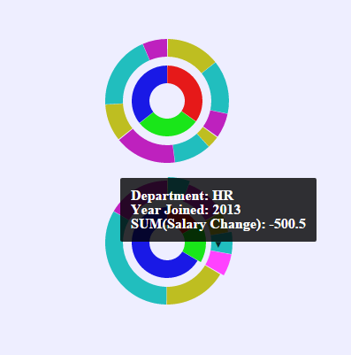
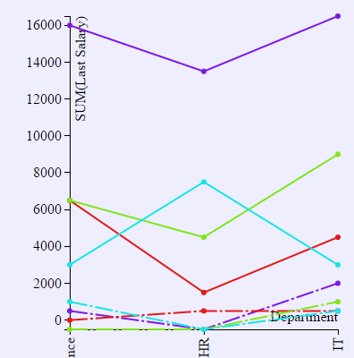

BI
BI is an online data visualization tool built on top of
- D3 (for data visualization)
- AlaSQL (for data processing)
- Dragula (for drag and drop)
You can try it out here.
Features
BI is intended to provide an environment for users to compare data visualization effect in different types of charts for the same set of categories and data series chosen.
It also tries to offer a way for solving common data visualization problems, like negative values in pie chart or multiple categories and series in line chart.
Negative values in pie chart.
Multiple categories and multiple series in pie chart.
Pie chart in Google Map.